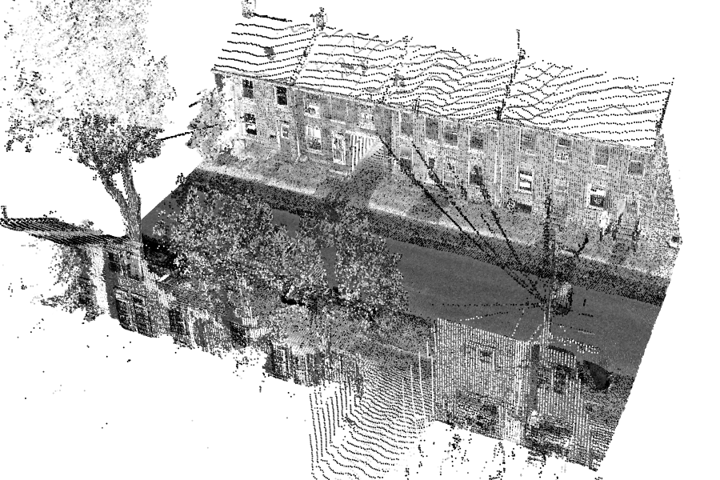
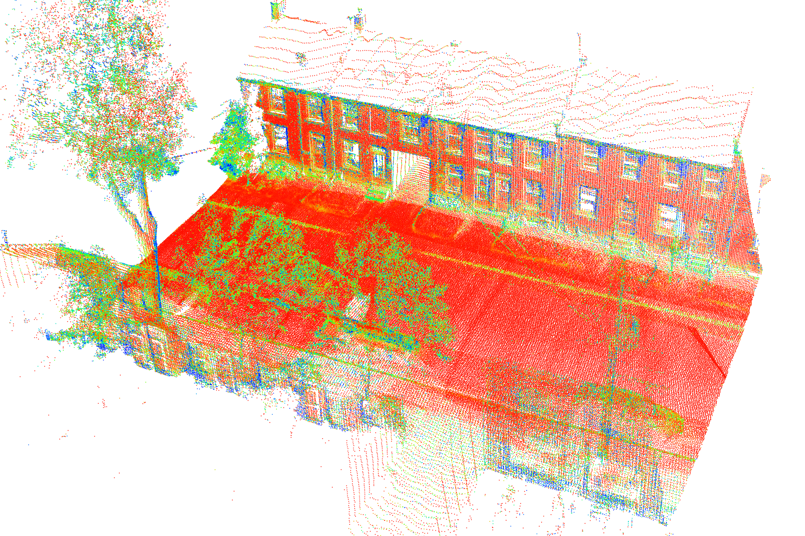
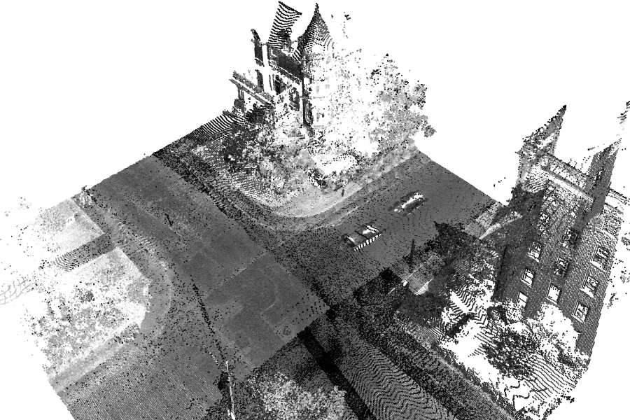
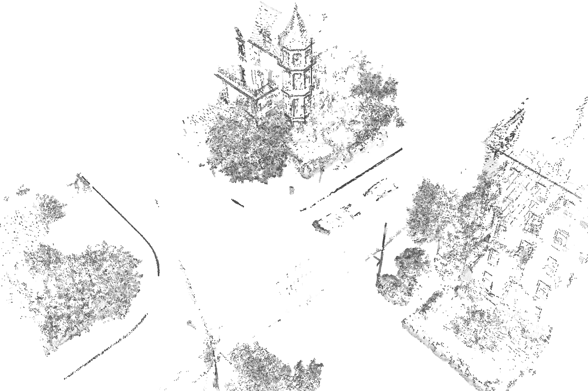
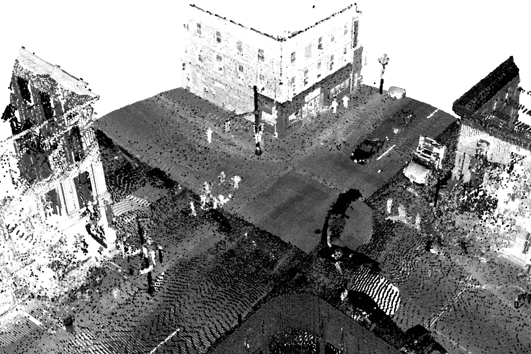
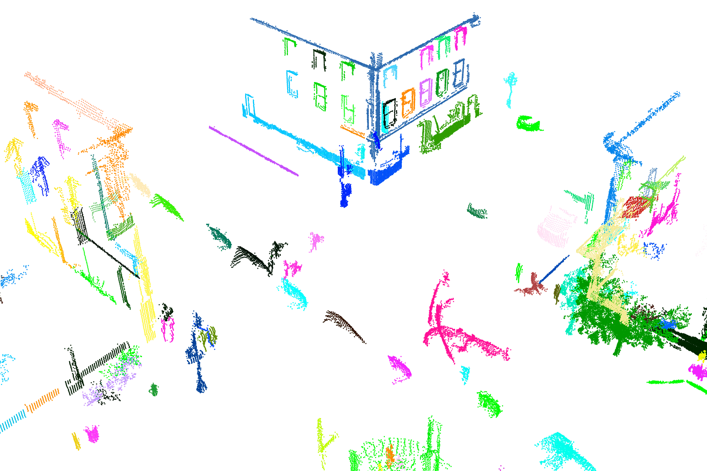

Difference of Normals PCL Implementation
DoNPCL is an implementation of the Difference of Normals (DoN) operator as a PCL feature. The DoN is a scale-based feature that may be used to perform segmentation of points in an unorganized pointcloud by scale, and is useful for isolating objects of known scale from a dense scene.
You will need the following before you can compile DoNPCL:
In addition for the example code you need the following:
The DoNPCL source code uses a standard PCL feature layout, using CMake for the build system. To configure the project, and compile the module, from within the downloaded/checked out source code folder:
$ mkdir build
$ cd build
$ cmake ..
$ make
This will build the main module, and the example code.
Included with the DoNPCL module are two examples. Calculating DoN requires calculating normals for the point cloud at various scales, one of the examples calculates the normals using the CPU while the other uses GPU processing (GPU is experimental and is likely to run out of memory for large pointclouds).
example_pcl_don.cpp)The example code can find the DoN features for a pointcloud, and perform various useful functions on the results. The only required parameters are:
smallscale - the small scale to use in the DoN filter (e.g 0.1m).
largescale - the large scale to use in the DoN filter (e.g. 1.0m).
infile - the file to read a point cloud from (PCD).
outfile - the file to write the DoN point cloud & normals to (PCD).
Running the example program with only these parameters will result in a pointcloud annotated with a DoN vector field, i.e. the (unit vector) difference of the normals between the two scales. There are also a set of optional parameters that will perform additional operations on the resulting vector field, they are described in more detail below:
magthreshold - po::value<double>(&threshold), "the minimum DoN magnitude to filter by
segment - segment scene into clusters with given distance tolerance.
meshclusters - create meshes for the clusters found using segment mode.
approx - voxelization factor of pointcloud to use in approximation of normals.
For example, running the program on our example point cloud:
example_pcl_don --smallscale 0.1 --largescale 1.0 --infile input.pcd --output output.pcd

The following vector annotated pointcloud is created - visualized using PCL's pcd_viewer, where the magnitude of the DoN vector field is visualized using a colour map.


We can use the DoN vector field to isolate objects that fit within the scales we used when calculating the DoN vector field, by thresholding the magnitude of the DoN vector at each point. For example,
example_pcl_don --smallscale 0.2 --largescale 2.0 --magthreshold 0.25 --infile input.pcd --output output.pcd
Notice the new parameter magthreshold, this gives a minimum magnitude threshold for the DoN vector field. DoN vectors are unit vectors, meaning the magnitude is in the range [0,1].

Once we have thresholded the scene, we are often left with objects nicely isolated into clusters/connected component groupings. We can use a simple clustering method to cluster all points within a distance tolerance of each other using the segment mode:
example_pcl_don --smallscale 0.2 --largescale 2.0 --magthreshold 0.25 --segment 0.2 --infile input.pcd --output output.pcd
Please reference the following when using this method in a published paper/conference proceedings.